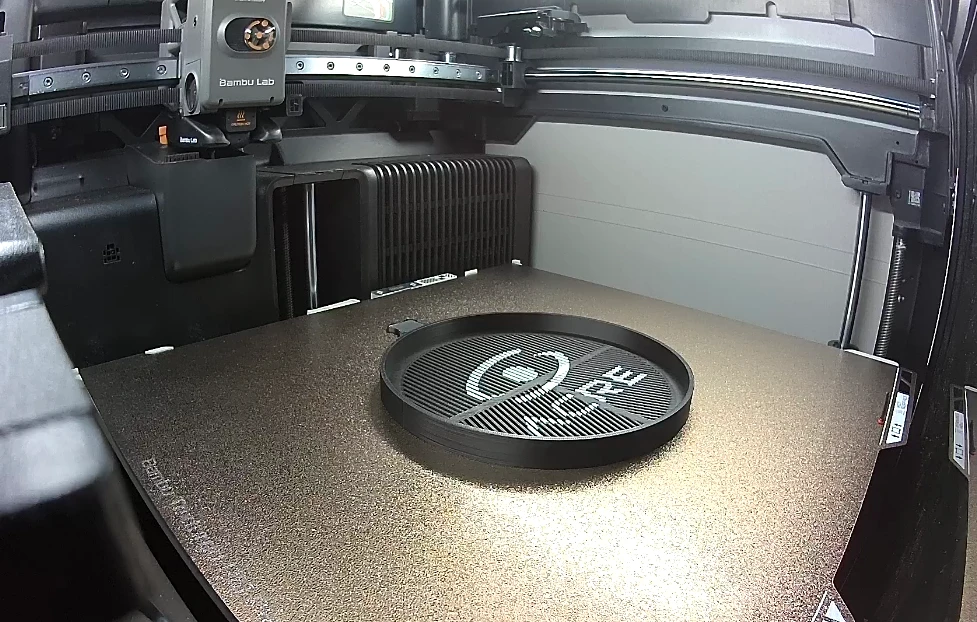

Druk 3D dla hobbystów i własnych projektów.
Drukujemy pojedyncze elementy dla majsterkowiczów, elektroników, modelarzy i osób budujących własne projekty. Możesz wysłać gotowy model, ale równie dobrze szkic, zdjęcie, uszkodzoną część albo zestaw wymiarów.
Rzeczy, których nie opłaca się szukać w sklepie.
Druk 3D ma największy sens wtedy, gdy potrzebujesz jednej konkretnej części albo chcesz dopasować rozwiązanie dokładnie do własnego projektu.
Nie sprzedajemy tylko czasu drukarki.
Jeśli masz gotowy plik, możemy go ocenić i wykonać. Jeśli go nie masz, pomagamy dobrać geometrię, materiał i sposób wykonania.

Wystarczy kilka informacji.
Przygotuj zdjęcie miejsca montażu, podstawowe wymiary i krótki opis tego, co element ma robić. Jeśli masz uszkodzoną część, pokaż ją z kilku stron. Jeśli masz gotowy model, dołącz STEP, STL lub 3MF do formularza wyceny.
Dobór materiału ustalamy na podstawie zastosowania. Do elementów lekkich i wizualnych często wystarczy PLA lub PETG. Przy pracy na zewnątrz, w cieple lub pod większym obciążeniem dobieramy bardziej odpowiedni materiał.
Wyceń projekt DIY